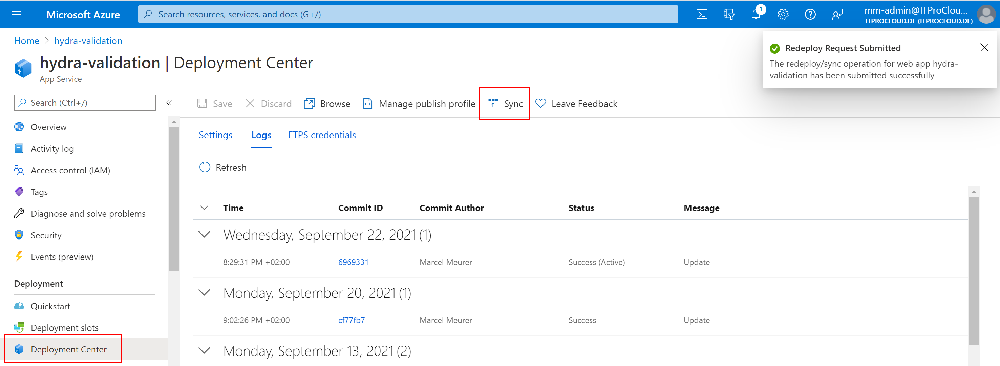
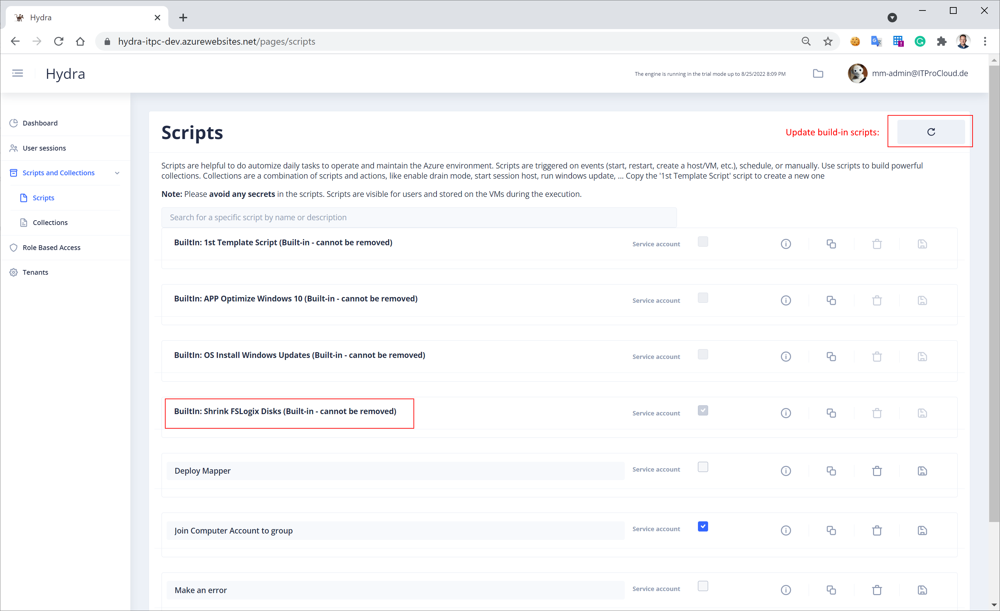
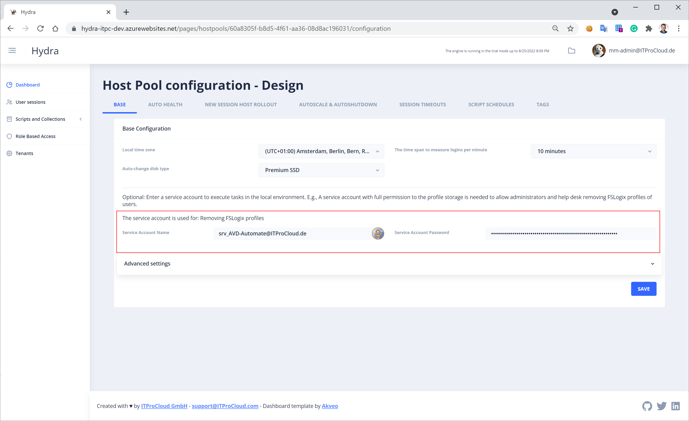
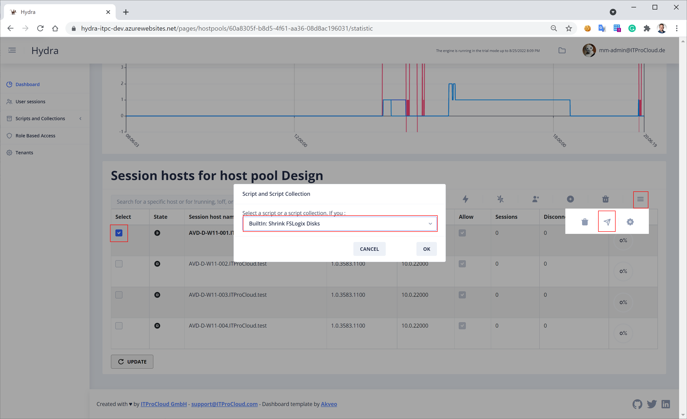
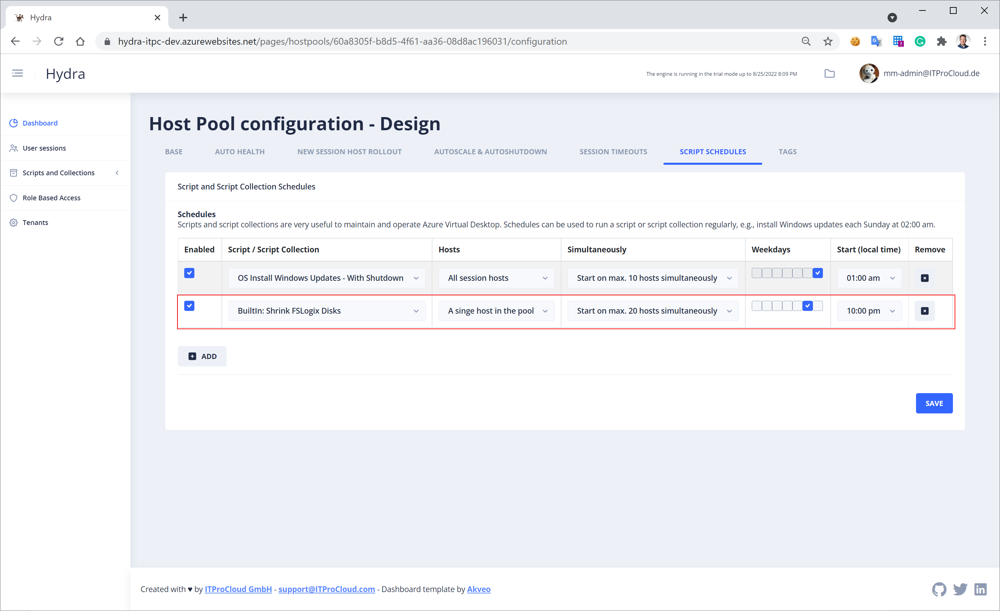

Shrink FSLogix profiles automatically with Hydra
Intro 
FSLogix profile disks increase their size over time - even if a user deletes data and the data amount goes down. Like Jim Moyle wrote: “Dynamically Expanding disks do not natively shrink when the volume of data within them reduces, they stay at the ‘High water mark’ of historical data volume within them.”
While you are paying for usage or allocated storage, having the profile disk small is a good way to go.
Jim provides a script to shrink the FSLogix profiles. Excellent work from Jim.
I added a script in Hydra to download and run the script from Jim to shrink FSLogix disk. This script can be used in a script schedule on a host pool to shrink the disk maybe one time a week.
Update Hydra to the newest version Having the host target “A single host in the pool” Hydra version 1.0.1.16 is needed. You can update Hydra in the Azure portal -> Your Hydra web app -> Deployment Center -> Sync 
Download the newest build-in scripts
Open the Hydra portal -> Scripts -> Click the button in the upper right corner: 
Service Account
Like the feature deleting FSLogix profile, the shrink method needs a service account configured on the host pool level. The account must have read/write permission to the FSLogix file share: 
Test shrinking
Make a first test for shrinking the profile disk from the session host view. Select one session host -> Run script or collection -> BuiltIn: Shrink FSLogix Disk 
Create a script schedule to shrink the disks automatically.
If everything works fine, a script schedule can be configured to run the optimization maybe every week. It’s important to run the script only on a single host. 
Get Hydra: Azure Marketplace